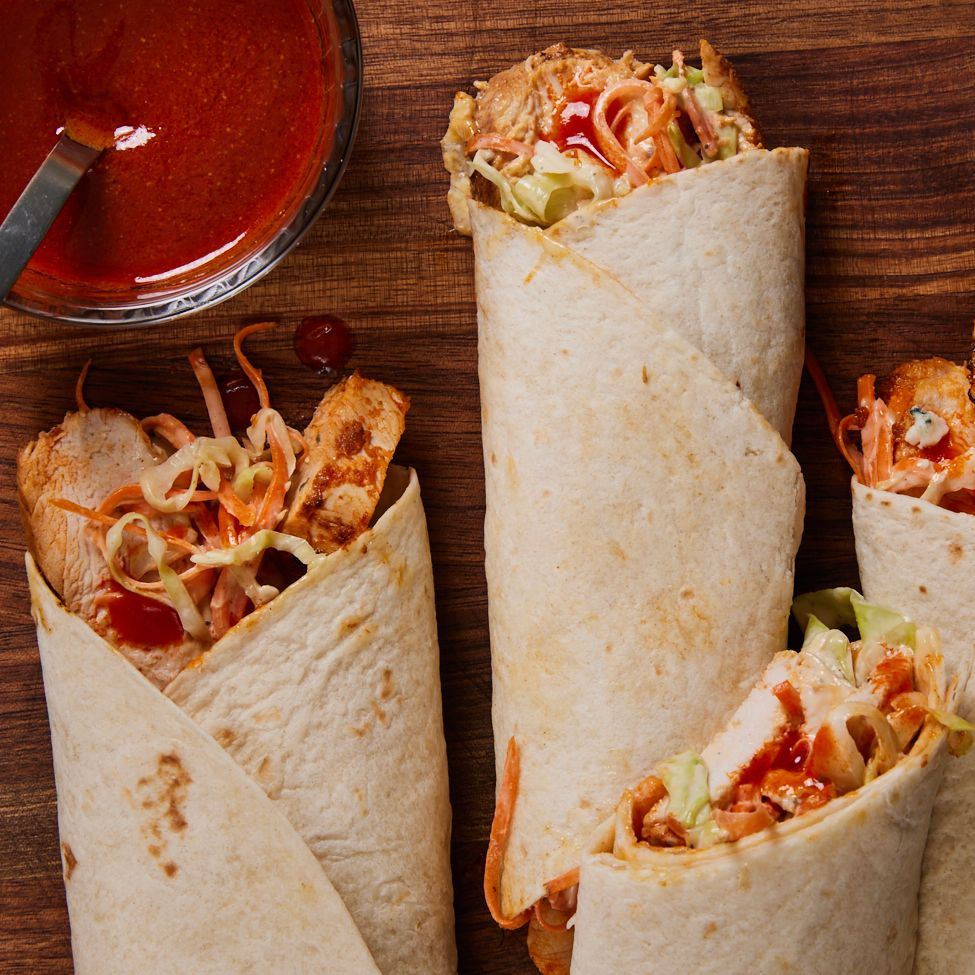

Buffalo Chicken Wrap

Description
I'm pretty sure it's safe to say that everybody loves a good wrap. I tried all kinds of wraps vegan, all meat, light wrap almost like a sandwich but this recipe is something different. In my opinion it's best recipe you can cook on the weekend when you have time to take it slow and enjoy the process.
Ingredients
- 1/2 c. crumbled blue cheese
- 1/2 c. mayonnaise
- 1 tbsp. red wine vinegar
- Kosher salt
- Freshly ground black pepper
- 1/2 c. shredded carrots
- 1/2 c. shredded green cabbage
- 1/2 c. hot sauce (such as Frank's RedHot Original)
- 1 tsp. cayenne pepper
- 1 tsp. garlic powder
- 1 tsp. ground cumin
- 1 tsp. paprika
- 2 tbsp. plus 1 tsp. extra-virgin olive oil, divided
- 1 lb. boneless skinless chicken breasts, sliced lengthwise into 1"-thick strips
- 4 large flour tortillas, warmed
Steps
- In a small bowl, whisk blue cheese, mayonnaise, vinegar, 1/2 teaspoon salt, and 1/2 teaspoon black pepper. Add carrots and cabbage and toss to coat. Cover and refrigerate until ready to use.
- In a medium bowl, whisk hot sauce, cayenne, garlic powder, cumin, paprika, 2 tablespoons oil, 1/2 teaspoon salt, and 1/2 teaspoon black pepper. Reserve 1/4 cup sauce; cover and refrigerate until ready to use.
- Add chicken to bowl with remaining hot sauce mixture; toss to coat. Cover and refrigerate at least 30 minutes or up to 24 hours.
- In a large skillet over medium-high heat, heat remaining 1 teaspoon oil. Remove chicken from marinade, add to skillet, and cook until cooked through and no longer pink, 4 to 5 minutes. Discard marinade.
- Divide blue cheese slaw, chicken, and reserved hot sauce between tortillas. Tightly roll up and serve.
Original post
Go back to Home Page